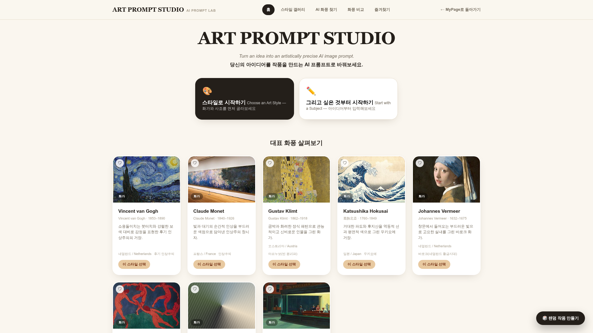
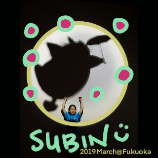
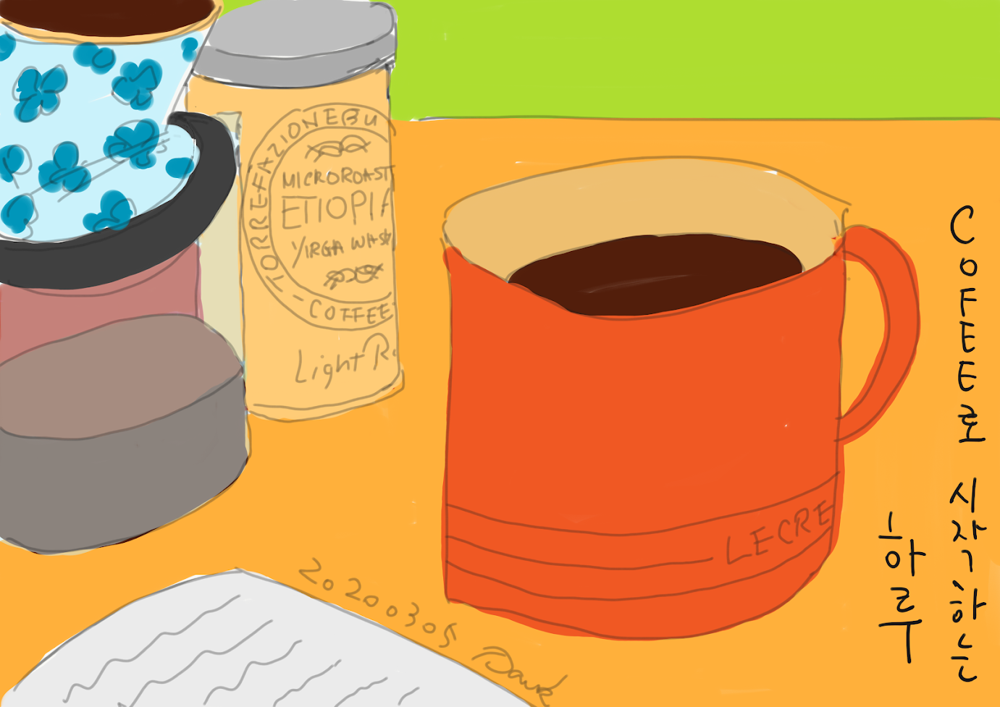

Project01 / 12
Art Prompt Studio
화풍을 고르고 주제를 입력하면 AI가 완성하는 이미지 생성 프롬프트
여행, 프로젝트, 창작, 교육, 출판까지.
마음을 가다듬고, 호기심을 따라 만든 것들.
Selected archive / 12

화풍을 고르고 주제를 입력하면 AI가 완성하는 이미지 생성 프롬프트
선택지의 기대값을 계산해주는 의사결정 도구
명연설 영상 107선 & 명언 300구 모음

그동안 그려온 그림 모음
Claude 기반 일정 생성 웹앱
웹툰 3편 모음 · 골라서 보기
수빈이를 위한 SAT 학습 웹앱
SNS에서 보이는 나의 모습
음성 인터페이스 연동 앱, 개발 진행 중

그동안 쓴 글 모음
수강한 AI 교육과정 일정 모음
펴낸 글과 책 모음